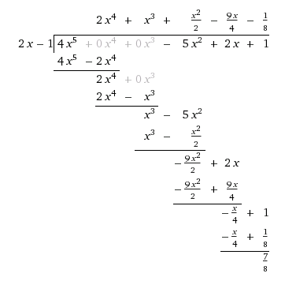

Tema 4: Polinomis
Generalitats
Un polinomi és una expressió algebraica que consisteix en una suma de termes. Cadascun dels termes, anomenats monomis, està format per una o més incògnites elevades a una potència i multiplicades per un nombre anomenat coeficient.
Parts d'un polinomi. Tipus de polinomis.
- Grau: és el terme que té l'exponent més gran del polinomi.
- Terme independent: és el terme que no té incògnita.
- Polinomi ordenat: és aquell que els seus termes estan ordenats en grau decreixent.
- Polinomi complet: és aquell que començant pel terme de grau més gran, té tots els termes de grau inferior fins arribar al terme independent.
- Polinomi oposat: és el polinomi que obtenim quan canviem de signe tots els termes d'un polinomi.
Operacions amb polinomis
Recordarem aquí les operacions bàsiques entre polinomis a través d'un exemple.
Exemple 1
Donats els polinomis: i calcula:

Per fer aquesta divisió utilitzarem la regla de Ruffini que vam veure l'any passat, que ens permet dividir un polinomi per un altre del tipus d'una manera molt més ràpida:
Per tant, el quocient de dividir per és i el residu .
Identitats notables. Binomi de Newton
Identitats notables
Recordem un moment les identitats notables de cursos passats:
Binomi de Newton
El binomi de Newton ens permet calcular expressions del tipus , . Per fer-ho cal construir el Triangle de Pascal o de Tartaglia, que ens donarà els coeficients de cadascun dels termes quan desenvolupem el binomi:
La primera fila correspon i així successivament. Comencem el triangle amb tres i llavors cada element de la fila següent s'obté sumant els dos elements de la fila superior.
Per desenvolupar el binomi, ara ja tenim els coeficients dels termes. Començarem per elevar a la màxima potència el primer element del binomi () i el segon ( l'elevarem a zero. Anirem disminuint l'exponent del primer terme i augmentant el del segon terme tal i com es mostra a l'exemple següent:
Exemple 2
Calcula . Si mirem el triangle, per els coeficients són: , , , , . Per tant:
Teorema del residu
El residu de dividir un polinomi per és igual a
Demostració
Si dividim per obtenim un polinomi quocient i un reste de grau 0 (ja que el divisor té grau 1). Si apliquem la prova de la divisió es compleix que:
Exemple 3
Quin és el residu de dividir per ?
Podem entendre com . Per tant, per saber el residu de la divisió només ens cal calcular :
El residu és per tant, .
Arrels d'un polinomi
Diem que és arrel de si el residu de dividir per és . De fet, això és el mateix que dir que és divisible per .
D'altra banda, dir que és arrel d'un polinomi és equivalent que dir que és solució de l'equació . Anem-ho a veure. Com que el residu és zero, si apliquem la prova de la divisió obtenim:
Si igualem ara a zero obtenim:
A més, i aplicant el teorema del residu, també es complirà que .
Així doncs, resumint, tenim que les afirmacions següents són equivalents:
- és arrel de
- és divisible per
- és solució de
Es pot demostrar també que:
Si és arrel entera de és divisor del terme independent del polinomi.
Demostració
Considerem el polinomi . Sigui arrel de llavors es compleix:
si aïllem i traiem factor comú a l'altre costat de la igualtat obtenim:
per tant, és nessàriament múltiple del terme independent .
Càlcul de les arrels d'un polinomi
Tal i com hem vist, calcular les arrels d'un polinomi és equivalent a resoldre l'equació . En general, i pel teorema fonamental de l'àlgebra, se sap que un polinomi té tantes arrels com grau té el polinomi. Com que nosaltres només buscarem arrels enteres, un polinomi de grau tindrà com a màxim arrels enteres.
El grau de
En aquest cas, solucionarem l'equació de primer grau o de segon grau que se'n deriva. Les arrels del polinomi són les solucions de l'equació de segon grau.
El grau de
Llavors haurem d'aplicar altres tècniques per trobar les arrels. Tal i com hem vist, aquestes arrels seran divisors del terme independent (el contrari no és cert, els divisors del terme independent d'un polinomi no sempre són arrels).
Una manera de fer-ho seria trobar totes les arrels del polinomi i llavors provar si el valor numèric del polinomi per cadascuna d'elles és zero. A la pràctica aquest mètode és una mica feixuc i el que fem és, un cop tenim els divisors del terme independent, dividim per cadascun d'ells amb Ruffini, i si el residu ens dóna zero, això voldrà dir que són arrels del polinomi. En aquest procés, quan arribem a un polinomi de grau 2, llavors resulta més ràpid resoldre l'equació de segon grau que se'n deriva.
Exemple 4
Troba les arrels de
Anem a veure quins són els divisors del terme independent: , , , .
Arribats en aquest punt, veiem que 1 és arrel. Podríem continuar fent Ruffini amb els candidats restants, però com que el quocient és un polinomi de segon grau, és més fàcil solucionar l'equació de segon grau i trobar les arrels:
Per tant, té 3 arrels enteres: , i , i això vol dir que és divisible per , i .
Factorització de polinomis
Factoritzar un polinomi consisteix en descomposar-lo com a producte de polinomis de grau menor. Per fer-ho, seguirem els passos següents:
-
Treure factor comú
Mirarem primer si podem extreure algun factor numèric o de variable a davant del polinomi. Per exemple, donat el polinomi , el podem començar a factoritzar com: .
-
Identitats notables
A vegades a simple vista, veiem que una expressió algebraica correspon a una de les tres identitats notables. Exemple, si hem de fatoritzar , primer mirarem si ho podem expressar com una identitat notable. Aquest cas és molt clar i el podem expressar com:
-
Arrels del polinomi
Un cop hem comprovat els dos estadis anteriors, prosseguirem a trobar les arrels del polinomi tal i com hem vist en l'apartat anterior. Vam veure que si és arrel de llavors era divisible per . Això vol dir que puc expressar com a producte d'un factor i un . Aquest quocient pot tenir més arrels i el podem seguir descomposant. La idea és descomposar un polinomi de grau com a producte de polinomis de grau 1 amb factors del tipus .
Exemple 5
Factoritza el polinomi .
Comprovem que podem treure factor comú:
.
Anem a factoritzar ara el segon factor: . Veiem que no correspon a cap identitat notable. El pas següent és mirar els divisors del terme independent i provar quins són arrels del polinomi.
Divisors del terme independent: , , . Provem cada cas, o bé per Ruffini comprovant que el residu de fer la divisió de per és zero o bé aplicant el Teorema del Residu i calculant el valor numèric del polinomi quan . Si ho fem, veiem que només quan el residu esdevé zero:
Com que hem comprovat totes les altres possibles arrels i el residu no ens ha donat zero, aquest polinomi no es pot descomposar més. Per tant, la descomposició en factors de esdevé:
Màxim comú divisor i mínim comú múltiple de dos polinomis
Per trobar el màxim comú divisor (mcd) i el mínim comú múltiple (mcm) de dos polinomis i cal fer:
- Factoritzar cada polinomi
- Factors comuns i no comuns amb l'exponent més gran
- Factors comuns amb l'exponent més petit
Exemple 6
Troba el mcd i el mcm dels polinomis i
Si els factoritzo aplicant el procediment anterior veig que:
Per tant:
Quan dos polinomis només tenen com a mcd el nombre diem que són polinomis primers entre ells.
Fraccions algebraiques
De la mateixa manera que podem parlar de mcd i mcm entre dos polinomis, també podeu parlar de fraccions:
és una fracció algebraica si i són polinomis amb .
Fraccions equivalents
Dues fraccions algebraiques i són equivalents si es compleix:
Exemple 7
Les fraccions algebraiques i són equivalents:
Fracció irreductible
També podem trobar la fracció irreductible en aquest cas. Quan dividim numerador i denominador pel mcd dels dos polinomis obtenim una fracció irreductible. Per fer-ho, caldrà factoritzar els polinomis numerador i denominador i simplificar els factors comuns.
Exemple 8
Suma i resta de fraccions algebraiques
Per sumar o restar fraccions algebraiques, en cas de no tenir el mateix denominador, caldrà buscar el mcm dels denominadors i reduir-les a denominador comú.
Exemple 9
Multiplicació i divisió
Procedirem de la mateixa manera que ho fèiem amb les fraccions.
Exemple 10